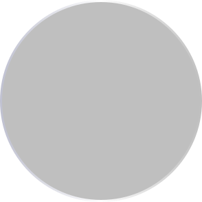
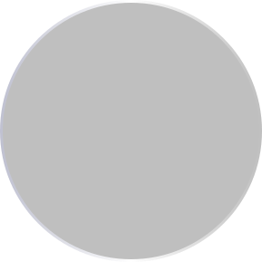
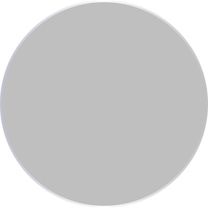

Meet Questy
Elite R&D Intelligence for AI Developer Agents
Ready to accelerate your AI workflows?
Start with Questy and get structured intelligence for every developer agent in your stack.
About Questy
Questy transforms your coding assistant into a rigorous research partner by embedding institutional-grade R&D protocols directly into its reasoning loop, eliminating hallucinations and ensuring total evidentiary rigor.
Zero Speculation
Enforces clear demarcations between verified facts, external claims, working assumptions, and inferences before executing code changes.
Audit-Grade Traceability
Every decision, rubric, and benchmark maps directly to inspectable primary sources with explicit date tags and methodology notes.
Multi-Agent Interop
Instantly pairs with Antigravity, Cursor, Claude Code, and GitHub Copilot to give autonomous subagents institutional discipline.
Core Pillars
Click any pillar to explore its underlying algorithmic architecture

Unbiased Thinking
Explore Protocol →

Step-by-Step System
Explore Protocol →
Real Proofs
Explore Protocol →> invoke_subagent("researcher", task="Evaluate Redis vs Dragonfly for high-write cache")
[1/3] Applying /Ques-guidelines: Isolating marketing claims from empirical benchmarks...
[2/3] Verified primary source: Redis 7.2 vs Dragonfly OSS benchmark suite (100k req/s sustained).
[3/3] Synthesis deliverable generated via /Ques-report: Traceable rubric & decision matrix established.